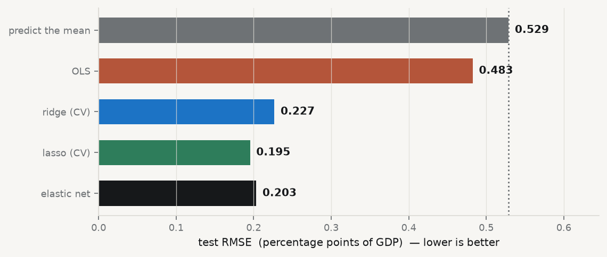
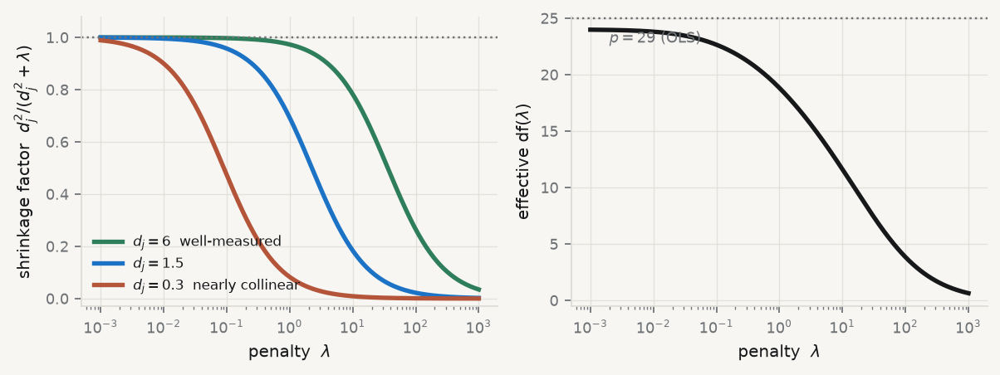
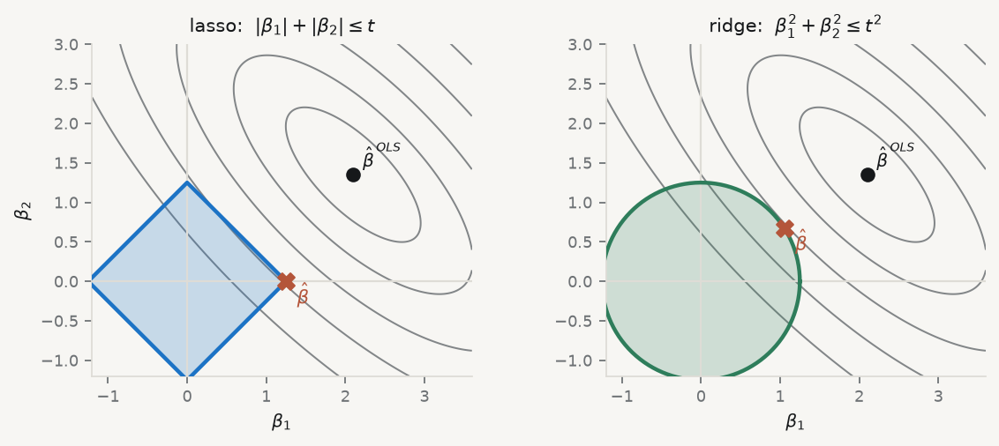
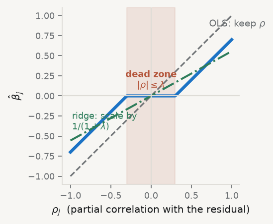
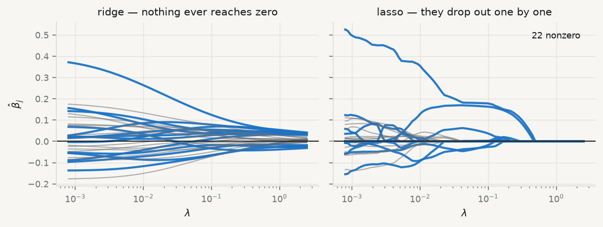
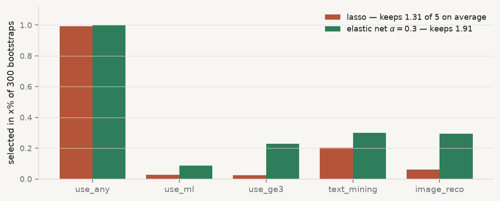
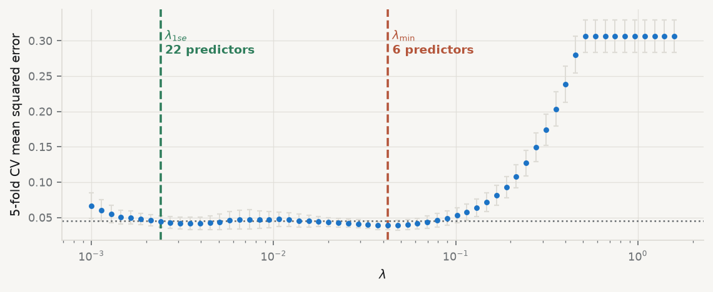

import sys, warnings
sys.path.insert(0, "../slides")
warnings.filterwarnings("ignore")
from plotstyle import setup, CL
plt = setup()
import numpy as np
import pandas as pd
from sklearn.linear_model import (LinearRegression, Ridge, Lasso, ElasticNet,
RidgeCV, LassoCV, ElasticNetCV, lasso_path)
from sklearn.preprocessing import StandardScaler
from sklearn.pipeline import make_pipeline
from sklearn.model_selection import train_test_split, KFold
from sklearn.metrics import mean_squared_error
raw = pd.read_parquet("../data/spine/angle_c_country.parquet")
YCOL = "rd_pct_gdp"
XCOLS = [c for c in raw.columns if c not in ("geo", "time", "flag", YCOL)]
d = raw.dropna(subset=[YCOL] + XCOLS).reset_index(drop=True)
X = d[XCOLS].to_numpy(float)
y = d[YCOL].to_numpy(float)
N, P = X.shape
Xtr, Xte, ytr, yte = train_test_split(X, y, test_size=0.3, random_state=7)
sc = StandardScaler().fit(Xtr)
Ztr, Zte = sc.transform(Xtr), sc.transform(Xte)
Z = StandardScaler().fit_transform(X)7 Regularisation: Ridge, Lasso, and the Elastic Net
When is a deliberately biased estimator the better one?
| Theme of the practice | Of many indicators, which few actually carry the signal? |
| Reading | Frandi et al. (2016), Fast and Scalable Lasso via Stochastic Frank-Wolfe Methods with a Convergence Guarantee · article |
| Replication package | 10.7910/DVN/QJEUKR |
| Data | qmib.load("core") — a wide slice of the spine — more candidate indicators than usable rows |
7.1 Before the session
Complete all four steps before class. Expect 90–120 minutes.
7.1.1 Step 1 — Reading
Open the pre-session slides · source:
MATH60033A-S05-Pre-Session.qmd
ISLR ch. 6.2
Source: https://www.statlearning.com/
Why: Ridge, lasso, and the tuning-parameter picture.
Zou & Hastie (2005), ‘Regularization and variable selection via the elastic net’, JRSS-B 67(2)
Source: https://doi.org/10.1111/j.1467-9868.2005.00503.x
Why: The original argument for combining the two penalties. Read the motivation and section 2.
ESL sec. 3.4
Source: https://hastie.su.domains/ElemStatLearn/
Why: The SVD treatment of shrinkage.
7.1.2 Step 2 — Concepts to review
You need the singular value decomposition at your fingertips: any \(X \in \mathbb{R}^{n\times p}\) can be written \(X = UDV^\top\) with \(U^\top U = V^\top V = I\) and \(D = \mathrm{diag}(d_1 \ge \dots \ge d_p \ge 0)\).
Convince yourself before class that \(X^\top X = VD^2V^\top\), so the eigenvalues of \(X^\top X\) are the squared singular values of \(X\). This one fact makes the entire lecture transparent.
Also note: all penalised methods require standardised predictors. A penalty on \(\beta_j\) is otherwise a penalty on your choice of measurement units. The intercept is never penalised.
7.1.3 Step 3 — Your data this week
Your data are already cleaned and cached. There is nothing to download.
| Group | Angle | Your file | Unit | Columns |
|---|---|---|---|---|
| G01 | A | angle_a_country.parquet |
country × time | dictionary |
| G02 | A | angle_a_sector.parquet |
country × sector × time | dictionary |
| G03 | B | angle_b_occupation.parquet |
occupation × country × time | dictionary |
| G04 | B | angle_b_sector.parquet |
sector × country × time | dictionary |
| G05 | C | angle_c_country.parquet |
country × time | dictionary |
| G06 | C | angle_c_sector_size.parquet |
country × sector × size × time | dictionary |
| G07 | D | angle_d_partner.parquet |
reporter × partner × time | dictionary |
| G08 | D | angle_d_product.parquet |
reporter × product × time | dictionary |
| G09 | E | angle_e_centralbank.parquet |
document | dictionary |
| G10 | E | angle_e_national.parquet |
document | dictionary |
import pandas as pd
core = pd.read_parquet("data/spine/core.parquet")
mine = pd.read_parquet("data/spine/<your file>.parquet")
df = mine.merge(core, on=["geo", "time"], how="left") # not for angle EBefore class: Count your candidate predictors and compute their correlation matrix. Report the maximum off-diagonal absolute correlation. If it is above 0.9, note which pair.
Read your data dictionary first. Its Traps section lists the things that have cost somebody a week, and its First look items take ten minutes. Knowing that a series is survey-based, breaks in 2021, or is structurally absent before a given year is part of your answer — not a footnote.
⚠️ The spine currently holds teaching fixtures: real schema, real coverage, real flags and real pathologies, generated from a known structure. Every method behaves as it would on the genuine sources, but no number in them is a fact about Europe. See
PROVENANCE.md.
Teaching dataset for the method exercise (optional)
FRED-MD: a monthly US macroeconomic panel (~127 series)
Source: Federal Reserve Bank of St. Louis (McCracken & Ng) URL: https://www.stlouisfed.org/research/economists/mccracken/fred-databases
Download current.csv from the FRED-MD page. The first row contains the transformation codes (1 = level, 2 = first difference, 5 = log difference, …). Apply them before modelling - the series are not stationary in levels.
import pandas as pd
raw = pd.read_csv("data/fred_md_current.csv")
tcode = raw.iloc[0, 1:].astype(int)
df = raw.iloc[1:].set_index("sasdate")This is a genuinely wide problem: many correlated series, a short sample. Exactly where regularisation earns its keep.
Use this if you want to see the method work on known ground before turning it on your own angle. The result you report must come from your project.
7.1.4 Step 4 — Self-check
Answer these in writing before class. You will not hand them in, but the lecture assumes you have attempted them. If you cannot answer one, bring the question.
- Why does the ridge solution exist even when \(p > n\), while OLS does not?
- Sketch the \(\ell_1\) and \(\ell_2\) constraint regions in two dimensions with an RSS contour. Explain the corner argument in one sentence.
- Two predictors are correlated at 0.99 and both matter. What does the lasso do? What does the elastic net do instead?
- As \(\lambda \to \infty\), what happens to bias and to variance? Where is the optimum?
7.1.5 Using your local LLM on the preparation
Your local model is a study partner, not an answer key. Ask it to explain, to quiz you, and to argue against you. Verify everything it says against the reading.
Prompts that work well for this session:
- “Derive the soft-thresholding operator from the subgradient condition. Show every step.”
- “My lasso selected 4 variables; when I drop one observation it selects a different 4. Is my code wrong, or is this expected? Explain.”
- “Explain why standardising predictors is mandatory for penalised regression but irrelevant for OLS coefficients’ interpretation.”
Standing rule for this course. Whenever you use the LLM in a deliverable, you must be able to say what you checked and how. An unverified claim from a language model has the same evidential status as an unverified claim from a stranger.
7.2 The lecture
Delivered from the slides. What follows is the same material as prose.
7.2.0.1 When is a deliberately biased estimator the better one?
7.2.1 Outline
| 1 | Where we are, and what this adds |
| 2 | The problem, on real data |
| 3 | Ridge — shrink everything, a little |
| 4 | Lasso — shrink some things to nothing |
| 5 | Elastic net — when predictors come in families |
| 6 | Choosing \(\lambda\) honestly |
| 7 | Key takeaways |
7.2.2 Learning objectives
- State the ridge and lasso objectives and say what each penalty buys
- Explain, in the SVD basis, why ridge shrinkage is targeted rather than blunt
- Derive soft-thresholding and use it to explain why the lasso produces exact zeros
- Choose between lasso and elastic net by looking at the correlation structure
- Report \(\lambda\) by cross-validation, and know why the standard errors afterwards are not valid
7.3 1 · What this adds
7.3.1 Where we are
| Session | What it gave you |
|---|---|
| 02 | The least-squares fit, and the geometry that produces it |
| 03 | An honest interval, and the diagnostics that decide which one |
| 04 | A number for out-of-sample error, and how to get it honestly |
Session 04 gave you a measuring instrument. It did not give you a way to improve the number it measures. Today is the first session that does.
7.3.2 The opening claim, and why it is wrong
OLS is the best linear unbiased estimator.
True. And useless, when the variance of “best unbiased” is enormous.
Session 04’s decomposition says total error is \(\text{bias}^2 + \text{variance} + \sigma^2\). Gauss–Markov fixes \(\text{bias} = 0\) and then minimises variance within that constraint.
Nobody asked whether \(\text{bias} = 0\) was the right constraint. Accept a little bias, buy a large reduction in variance, and total error falls. That trade is what regularisation is.
7.3.3 What today adds, in one line
- A dial — \(\lambda\) — that moves you along the bias–variance curve of Session 04 on purpose
- A method that still works when \(p > n\), where OLS has no unique solution at all
- A method that performs variable selection as part of fitting, not as a separate ritual
Sessions 06 through 11 all reuse this dial. Penalised logistic regression, tree depth, the number of principal components, the number of clusters — every one of them is a \(\lambda\) under another name.
7.4 2 · The problem, on real data
7.4.1 A situation you will actually meet
We want to explain R&D intensity (R&D as % of GDP) across European countries from digital and AI-adoption indicators.
- 30 countries × 11 years in the file
- but the AI-use survey only exists from 2021, so those columns are two-thirds missing
- 15 of the columns are auxiliary series of unknown value — nobody has vetted them
This is the ordinary condition of applied macro work: a wide table, a short usable window, and no prior about which columns matter.
7.4.2 What complete-case analysis leaves you
raw = pd.read_parquet("../data/spine/angle_c_country.parquet")
YCOL = "rd_pct_gdp"
XCOLS = [c for c in raw.columns if c not in ("geo", "time", "flag", YCOL)]
d = raw.dropna(subset=[YCOL] + XCOLS) # keep only fully observed rows
print(f"usable rows n = {len(d)}, candidate predictors p = {len(XCOLS)}")usable rows n = 37, candidate predictors p = 29\(n = 37\), \(p = 29\). Eight degrees of freedom. This is not an exotic case — it is what happens every time a new survey wave meets an old panel.
7.4.3 Why OLS cannot cope here
print(f"condition number of the standardised design: {np.linalg.cond(Ztr):.1e}")condition number of the standardised design: 5.0e+15- Session 02: \(\kappa(X)\) near \(10^{16}\) means the design is numerically singular
- Session 03: the variance of \(\hat\beta_j\) is \(\sigma^2 / [(1-R_j^2)\,\mathrm{SS}_j]\) — and \(R_j^2 \to 1\) here
- So the coefficients exist, but they are noise amplified
The diagnostic you learned in Session 03 does not just warn you. It tells you which tool to reach for next.
7.4.4 Four estimators, one held-out test set
def test_rmse(model):
"""Fit on the training split, score on the untouched 30%."""
model.fit(Xtr, ytr)
return np.sqrt(mean_squared_error(yte, model.predict(Xte)))
ALPHAS = np.logspace(-3, 3, 60)
L1S = [0.1, 0.5, 0.7, 0.9, 0.95, 1.0]
scores = {
"predict the mean": np.sqrt(mean_squared_error(yte, np.full_like(yte, ytr.mean()))),
"OLS": test_rmse(make_pipeline(StandardScaler(), LinearRegression())),
"ridge (CV)": test_rmse(make_pipeline(StandardScaler(), RidgeCV(alphas=ALPHAS))),
"lasso (CV)": test_rmse(make_pipeline(
StandardScaler(), LassoCV(cv=5, random_state=0, max_iter=50_000))),
"elastic net": test_rmse(make_pipeline(
StandardScaler(), ElasticNetCV(l1_ratio=L1S, cv=5,
random_state=0, max_iter=50_000))),
}make_pipeline(StandardScaler(), …) matters: the scaler is refitted inside each CV fold, so no test-fold information leaks into the standardisation. Session 04, leakage #1.
7.4.5 The result
fig, ax = plt.subplots(figsize=(7.2, 3.1))
names = list(scores); vals = [scores[k] for k in names]
cols = [CL.muted, CL.warn, CL.accent, CL.good, CL.ink]
b = ax.barh(names, vals, color=cols, height=.62)
for r, v in zip(b, vals):
ax.text(v + .008, r.get_y() + r.get_height() / 2, f"{v:.3f}",
va="center", fontsize=9, fontweight="600")
ax.axvline(scores["predict the mean"], color=CL.muted, ls=":", lw=1.3)
ax.set_xlabel("test RMSE (percentage points of GDP) — lower is better")
ax.set_xlim(0, max(vals) * 1.22)
ax.invert_yaxis(); ax.grid(axis="y", visible=False)
plt.show()
OLS beats predicting the mean by 9%. Ridge beats it by 57%.
7.4.6 Read that again
- With 29 predictors and 37 rows, OLS is worth almost nothing — it is fitting noise
- The penalised fits cut the error by more than half, using the same columns
- Nothing was added. Something was restrained
This is the entire argument for regularisation, and it took four lines of code to make. The rest of the session is about why it works and how to set the dial.
7.5 3 · Ridge
7.5.1 The estimator
\[\hat\beta^{\text{ridge}} = \arg\min_\beta \Big\{ \|y - X\beta\|_2^2 + \lambda\|\beta\|_2^2 \Big\} = (X^\top X + \lambda I)^{-1} X^\top y\]
Adding \(\lambda I\) lifts every eigenvalue of \(X^\top X\) by \(\lambda\). A matrix with all eigenvalues positive is invertible — for any \(\lambda > 0\), even when \(p > n\).
Regularisation is not only a bias–variance device. It is what makes the problem well-posed at all. That is why it appears in every high-dimensional method you will meet.
7.5.2 Ridge in the SVD basis
With \(X = UDV^\top\) — Session 02’s singular value decomposition:
\[\hat y^{\text{ridge}} = \sum_{j=1}^{p} u_j \, \frac{d_j^2}{d_j^2 + \lambda} \, u_j^\top y\]
OLS is the same sum with every factor equal to 1.
So ridge does not scale coefficients down uniformly. It multiplies the \(j\)-th principal direction of the design by a factor that depends on how much the data vary in that direction.
7.5.3 The shrinkage factor, drawn
lam = np.logspace(-3, 3, 300)
fig, axes = plt.subplots(1, 2, figsize=(7.6, 2.9))
ax = axes[0]
for dj, c, lab in [(6.0, CL.good, "$d_j=6$ well-measured"),
(1.5, CL.accent, "$d_j=1.5$"),
(0.3, CL.warn, "$d_j=0.3$ nearly collinear")]:
ax.semilogx(lam, dj**2 / (dj**2 + lam), color=c, lw=2.4, label=lab)
ax.axhline(1, color=CL.muted, ls=":", lw=1.1)
ax.set_xlabel(r"penalty $\lambda$")
ax.set_ylabel(r"shrinkage factor $d_j^2/(d_j^2+\lambda)$")
ax.set_ylim(-.03, 1.08); ax.legend(loc="lower left", fontsize=7.5)
svals = np.linalg.svd(Ztr, compute_uv=False)
ax = axes[1]
df = [(svals**2 / (svals**2 + L)).sum() for L in lam]
ax.semilogx(lam, df, color=CL.ink, lw=2.4)
ax.axhline(len(svals), color=CL.muted, ls=":", lw=1.1)
ax.text(2e-3, len(svals) - 2.2, f"$p = {P}$ (OLS)", color=CL.muted, fontsize=8)
ax.set_xlabel(r"penalty $\lambda$")
ax.set_ylabel(r"effective df$(\lambda)$")
plt.show()
Left: the same \(\lambda\) barely touches a well-measured direction and crushes a collinear one. Right: on our actual design, effective df slides smoothly from 29 down toward 0.
7.5.4 Why that shape is the whole point
Directions where the data vary a lot carry real information — ridge leaves them alone. Directions where the data are nearly collinear are where OLS goes insane — ridge crushes them.
\[\mathrm{df}(\lambda) = \sum_j \frac{d_j^2}{d_j^2+\lambda} \quad\text{falls smoothly from } p \text{ to } 0\]
Ridge is a targeted damping of exactly the directions in which your data carry least information. It is not a blunt instrument, and describing it as “shrinking the coefficients” undersells it.
7.5.5 Ridge in three lines, explained
mod = make_pipeline(
StandardScaler(), # 1. penalty is scale-dependent: standardise first
RidgeCV(alphas=np.logspace(-3, 3, 60)) # 2. pick lambda by leave-one-out CV over a log grid
).fit(Xtr, ytr) # 3. refit on all training rows at the chosen lambda
print(f"chosen lambda = {mod[-1].alpha_:.3f}")
print(f"largest |coef|: OLS {np.abs(LinearRegression().fit(Ztr, ytr).coef_).max():.3f}"
f" ridge {np.abs(mod[-1].coef_).max():.3f}")chosen lambda = 23.598
largest |coef|: OLS 0.396 ridge 0.055Line 1 is not optional. A penalty on \(\|\beta\|_2^2\) punishes a coefficient measured in euros differently from one measured in thousands of euros. Standardise, or the penalty is arbitrary.
7.5.6 Bias–variance, explicitly
- \(\mathrm{Var}(\hat\beta^{\text{ridge}})\) is decreasing in \(\lambda\)
- \(\text{Bias}^2\) is increasing in \(\lambda\)
- There always exists some \(\lambda > 0\) whose MSE is strictly lower than OLS
That last line is Hoerl and Kennard, 1970, and it genuinely surprised the profession. It should change how you hear the phrase “best unbiased estimator” for the rest of your career.
7.6 4 · Lasso
7.6.1 The estimator
\[\hat\beta^{\text{lasso}} = \arg\min_\beta \Big\{ \tfrac{1}{2n}\|y - X\beta\|_2^2 + \lambda\|\beta\|_1 \Big\}\]
One change from ridge: \(\|\beta\|_1 = \sum_j |\beta_j|\) instead of \(\sum_j \beta_j^2\).
No closed form. But that single change makes some coefficients exactly zero — not small, zero — and that is a qualitative difference, not a quantitative one.
To see why, look at the equivalent constrained problem: minimise RSS subject to \(\|\beta\|_1 \le t\).
7.6.2 The picture that explains the zeros
fig, axes = plt.subplots(1, 2, figsize=(7.6, 3.15))
bols = np.array([2.1, 1.35])
A = np.array([[1.0, 0.72], [0.72, 1.0]]) # RSS quadratic form: correlated predictors
g = np.linspace(-1.2, 3.6, 320)
G1, G2 = np.meshgrid(g, g)
dev = np.stack([G1 - bols[0], G2 - bols[1]])
Q = A[0, 0]*dev[0]**2 + 2*A[0, 1]*dev[0]*dev[1] + A[1, 1]*dev[1]**2
for ax, kind in zip(axes, ["lasso", "ridge"]):
ax.contour(G1, G2, Q, levels=[.35, 1.1, 2.4, 4.4, 7.2],
colors=CL.muted, linewidths=.9, alpha=.85)
t = 1.25
if kind == "lasso":
ax.fill([t, 0, -t, 0], [0, t, 0, -t], color=CL.accent, alpha=.22, zorder=2)
ax.plot([t, 0, -t, 0, t], [0, t, 0, -t, 0], color=CL.accent, lw=2.0, zorder=3)
sol = np.array([t, 0.0])
ttl = r"lasso: $|\beta_1|+|\beta_2| \leq t$"
else:
th = np.linspace(0, 2*np.pi, 240)
ax.fill(t*np.cos(th), t*np.sin(th), color=CL.good, alpha=.20, zorder=2)
ax.plot(t*np.cos(th), t*np.sin(th), color=CL.good, lw=2.0, zorder=3)
u = bols / np.linalg.norm(bols); sol = t * u
ttl = r"ridge: $\beta_1^2+\beta_2^2 \leq t^2$"
ax.scatter(*bols, s=42, color=CL.ink, zorder=5)
ax.text(bols[0]+.12, bols[1]+.10, r"$\hat\beta^{\,OLS}$", fontsize=9, color=CL.ink)
ax.scatter(*sol, s=70, color=CL.warn, zorder=6, marker="X")
ax.text(sol[0]+.14, sol[1]-.28, r"$\hat\beta$", fontsize=9.5, color=CL.warn, fontweight="600")
ax.axhline(0, color=CL.line, lw=1.0); ax.axvline(0, color=CL.line, lw=1.0)
ax.set_title(ttl, fontsize=9.5)
ax.set_xlim(-1.2, 3.6); ax.set_ylim(-1.2, 3.0)
ax.set_aspect("equal"); ax.grid(visible=False)
ax.set_xlabel(r"$\beta_1$")
axes[0].set_ylabel(r"$\beta_2$")
plt.show()
Grey ellipses: contours of equal RSS, expanding from the OLS solution. Shaded region: what the budget \(t\) allows. The estimate is where they first touch.
7.6.3 Corners produce zeros
The \(\ell_1\) region is a diamond: it has corners, and every corner sits on an axis, where one coordinate is exactly zero. Ellipses expanding from an arbitrary direction generically hit a corner.
The \(\ell_2\) region is a disc: perfectly smooth, no corners. The touch point almost never has a zero coordinate. Ridge shrinks; it never selects.
In \(p\) dimensions the diamond has \(2^p\) vertices and a whole lattice of edges and faces, each with some coordinates zero. Sparsity is not a trick — it is the shape of the constraint.
7.6.4 Where the zeros come from, algebraically
Hold every \(\beta_k\), \(k \neq j\), fixed. With standardised columns the univariate problem is
\[\min_{\beta_j} \tfrac{1}{2}(\beta_j - \rho_j)^2 + \lambda|\beta_j|, \qquad \rho_j = \tfrac{1}{n}\sum_i x_{ij}\Big(y_i - \sum_{k \neq j} x_{ik}\beta_k\Big)\]
\(\rho_j\) is just the correlation of \(x_j\) with what the other predictors have not explained.
Convex, but not differentiable at \(0\). The subgradient of \(|\beta_j|\) there is the whole interval \([-1, 1]\) — which is exactly what allows a flat spot at zero.
7.6.5 Soft-thresholding
\[\hat\beta_j = S_\lambda(\rho_j) = \mathrm{sign}(\rho_j)\big(|\rho_j| - \lambda\big)_+\]
Read it in words:
if the partial correlation of \(x_j\) with the residual is smaller in magnitude than \(\lambda\), set the coefficient to exactly zero; otherwise shrink it toward zero by \(\lambda\).
Cycling this update over \(j\) until convergence is coordinate descent. It is why scikit-learn fits a 200-predictor lasso path faster than you can type the command.
7.6.6 The operator, drawn
rho = np.linspace(-1.0, 1.0, 400)
LAM = 0.30
soft = np.sign(rho) * np.clip(np.abs(rho) - LAM, 0, None)
fig, ax = plt.subplots(figsize=(5.4, 2.9))
ax.plot(rho, rho, color=CL.muted, ls="--", lw=1.4)
ax.text(.72, .86, "OLS: keep $\\rho$", color=CL.muted, fontsize=8.5)
ax.plot(rho, soft, color=CL.accent, lw=2.8)
ax.plot(rho, rho / (1 + 0.8), color=CL.good, lw=1.8, ls="-.")
ax.text(-.98, -.42, "ridge: scale by\n$1/(1+\\lambda)$", color=CL.good, fontsize=8)
ax.axvspan(-LAM, LAM, color=CL.warn, alpha=.12)
ax.text(0, .10, "dead zone\n$|\\rho|\\leq\\lambda$", ha="center", color=CL.warn,
fontsize=8, fontweight="600")
ax.axhline(0, color=CL.line, lw=1.0); ax.axvline(0, color=CL.line, lw=1.0)
ax.set_xlabel(r"$\rho_j$ (partial correlation with the residual)")
ax.set_ylabel(r"$\hat\beta_j$")
ax.set_aspect("equal"); ax.grid(visible=False)
plt.show()
Ridge (dash-dot) passes through the origin with a shallower slope — it approaches zero but reaches it only when \(\lambda = \infty\). The lasso (solid) has a flat interval at zero.
7.6.7 Do it by hand, once
Soft-threshold \(\rho = (0.42,\; -0.18,\; 0.09,\; 0.31)\) at \(\lambda = 0.20\):
| \(\rho_j\) | \(\lvert\rho_j\rvert - \lambda\) | \(\hat\beta_j\) |
|---|---|---|
| \(0.42\) | \(0.22\) | \(\mathbf{0.22}\) |
| \(-0.18\) | \(-0.02 \to 0\) | \(\mathbf{0}\) |
| \(0.09\) | \(-0.11 \to 0\) | \(\mathbf{0}\) |
| \(0.31\) | \(0.11\) | \(\mathbf{0.11}\) |
Two of four survive. You can compute a lasso solution with a pen — and you will be asked to on the midterm.
7.6.8 The coefficient path
fig, axes = plt.subplots(1, 2, figsize=(7.7, 2.95), sharey=True)
grid = np.logspace(-3.1, 0.4, 90)
ax = axes[0]
Bs = np.array([Ridge(alpha=a * len(ytr)).fit(Ztr, ytr).coef_ for a in grid])
for k in range(P):
aux = XCOLS[k].startswith("aux")
ax.plot(grid, Bs[:, k], lw=1.0 if aux else 1.9,
color=CL.muted if aux else CL.accent, alpha=.55 if aux else .95)
ax.set_xscale("log"); ax.set_title("ridge — nothing ever reaches zero", fontsize=9.5)
ax.set_ylabel(r"$\hat\beta_j$"); ax.set_xlabel(r"$\lambda$")
ax.axhline(0, color=CL.ink, lw=.9)
ax = axes[1]
alphas_l, coefs_l, _ = lasso_path(Ztr, ytr, alphas=grid)
for k in range(P):
aux = XCOLS[k].startswith("aux")
ax.plot(alphas_l, coefs_l[k], lw=1.0 if aux else 1.9,
color=CL.muted if aux else CL.accent, alpha=.55 if aux else .95)
ax.set_xscale("log"); ax.set_title("lasso — they drop out one by one", fontsize=9.5)
ax.set_xlabel(r"$\lambda$"); ax.axhline(0, color=CL.ink, lw=.9)
nz = (np.abs(coefs_l) > 1e-8).sum(axis=0)
ax.text(.9 * grid[-1], coefs_l.max() * .92, f"{nz[-1]} nonzero", ha="right",
color=CL.ink, fontsize=8)
plt.show()
Blue: the 14 named indicators. Grey: the 15 unvetted auxiliary series. Read right to left — increasing penalty.
7.6.9 What survived, on our data
lcv = LassoCV(cv=5, random_state=0, max_iter=50_000).fit(Ztr, ytr)
kept = [(c, b) for c, b in zip(XCOLS, lcv.coef_) if abs(b) > 1e-8]
print(f"lambda = {lcv.alpha_:.4f} kept {len(kept)} of {P}")
for c, b in sorted(kept, key=lambda t: -abs(t[1])):
print(f" {c:<20s} {b:+.3f}")
print(f"auxiliary series kept: {sum(c.startswith('aux') for c, _ in kept)} of 15")lambda = 0.0520 kept 6 of 29
ai_use_any +0.182
digital_intensity +0.168
ict_specialists +0.058
barrier_cost -0.041
barrier_legal -0.035
cloud_use +0.002
auxiliary series kept: 0 of 15Every one of the 15 unvetted series was set to zero. The lasso did the screening you would otherwise have done by hand, by eye, and by prejudice.
7.6.10 Three limitations you must state out loud
- With \(p > n\), the lasso can select at most \(n\) variables — a hard ceiling, not a finding
- Among highly correlated predictors it picks one and zeroes the rest, near-arbitrarily
- Its selected set is consistent only under strong conditions (the irrepresentable condition)
So do not present a lasso path as if it had identified the true model. It identified a set of columns that predicts well at one value of \(\lambda\), on one sample.
7.7 5 · Elastic net
7.7.1 Limitation 2 is not academic
Our five AI-adoption columns are all measuring roughly the same thing:
GRP = ["ai_use_any", "ai_use_ml", "ai_use_ge3", "ai_text_mining", "ai_image_reco"]
C = d[GRP].corr().to_numpy()
print(f"pairwise correlations within the group: {C[np.triu_indices(5, 1)].min():.2f}"
f" to {C[np.triu_indices(5, 1)].max():.2f}")pairwise correlations within the group: 0.93 to 0.96The lasso must choose one. So your paper says “text mining, specifically, and none of its neighbours” — a claim the data cannot support and a referee will not believe.
7.7.2 The estimator
\[\hat\beta^{\text{EN}} = \arg\min_\beta \Big\{ \tfrac{1}{2n}\|y-X\beta\|_2^2 + \lambda\big[\alpha\|\beta\|_1 + \tfrac{1-\alpha}{2}\|\beta\|_2^2\big] \Big\}\]
| \(\alpha\) | what you get |
|---|---|
| \(1\) | the lasso |
| \(0\) | ridge |
| \((0,1)\) | sparse and strictly convex |
Strict convexity for any \(\alpha < 1\) is what buys the grouping effect: two identical predictors receive identical coefficients, where the lasso had to pick.
7.7.3 The grouping effect, measured
def sel_freq(l1_ratio, alpha=0.03, B=300, seed=11):
"""How often is each group member selected, across bootstrap resamples?"""
idx = [XCOLS.index(c) for c in GRP]
rng = np.random.default_rng(seed)
hits = np.zeros(len(GRP)); size = []
for _ in range(B):
k = rng.integers(0, N, N)
m = ElasticNet(alpha=alpha, l1_ratio=l1_ratio, max_iter=50_000).fit(Z[k], y[k])
on = np.abs(m.coef_[idx]) > 1e-8
hits += on; size.append(on.sum())
return hits / B, np.mean(size)
fL, szL = sel_freq(1.0)
fE, szE = sel_freq(0.3)
fig, ax = plt.subplots(figsize=(7.2, 2.95))
w = .38; pos = np.arange(len(GRP))
ax.bar(pos - w/2, fL, w, color=CL.warn, label=f"lasso — keeps {szL:.2f} of 5 on average")
ax.bar(pos + w/2, fE, w, color=CL.good, label=f"elastic net $\\alpha=0.3$ — keeps {szE:.2f}")
ax.set_xticks(pos); ax.set_xticklabels([g.replace("ai_", "") for g in GRP], fontsize=8.5)
ax.set_ylabel("selected in x% of 300 bootstraps"); ax.set_ylim(0, 1.12)
ax.legend(fontsize=8, loc="upper right"); ax.grid(axis="x", visible=False)
plt.show()
Same data, same \(\lambda\), 300 resamples. The lasso keeps the group leader and discards its neighbours; the elastic net admits them.
7.7.4 Why this matters for a paper
For a macro panel where a dozen series measure one construct, this is the difference between a model that says “AI adoption matters” and one that says “industrial production of durable goods excluding motor vehicles, specifically.”
The coordinate update is soft-threshold, then divide:
\[\hat\beta_j = \frac{S_{\lambda\alpha}(\rho_j)}{1 + \lambda(1-\alpha)}\]
Same worked example, \(\lambda = 0.2\), \(\alpha = 0.5\): threshold at \(0.10\), divide by \(1.10\) → \((0.291,\, -0.073,\, 0,\, 0.191)\). Three survive instead of two.
7.8 6 · Choosing \(\lambda\)
7.8.1 The path, and where it starts
Fit over a decreasing grid from
\[\lambda_{\max} = \max_j \frac{|x_j^\top y|}{n\alpha}\]
— the smallest penalty that still gives the null model — down to \(\varepsilon\lambda_{\max}\), with warm starts (each fit begins from the previous solution).
Then cross-validate jointly over \((\alpha, \lambda)\). Not sequentially: the best \(\lambda\) depends on \(\alpha\).
7.8.2 The CV curve
folds = KFold(n_splits=5, shuffle=True, random_state=0)
grid2 = np.logspace(-3, 0.2, 60)
lc = LassoCV(alphas=grid2, cv=folds, random_state=0, max_iter=50_000).fit(Z, y)
mse = lc.mse_path_.mean(axis=1)
se = lc.mse_path_.std(axis=1) / np.sqrt(lc.mse_path_.shape[1])
i_min = int(np.argmin(mse))
thresh = mse[i_min] + se[i_min]
i_1se = int(np.max(np.where(mse <= thresh)[0])) # alphas are descending: largest lambda
nzs = [(np.abs(Lasso(alpha=a, max_iter=50_000).fit(Z, y).coef_) > 1e-8).sum() for a in lc.alphas_]
fig, ax = plt.subplots(figsize=(7.2, 3.0))
ax.errorbar(lc.alphas_, mse, yerr=se, fmt="o", ms=3, lw=.9,
color=CL.accent, ecolor=CL.line, capsize=2)
ax.set_xscale("log")
for i, c, lab in [(i_min, CL.warn, r"$\lambda_{\min}$"), (i_1se, CL.good, r"$\lambda_{1se}$")]:
ax.axvline(lc.alphas_[i], color=c, ls="--", lw=1.6)
ax.text(lc.alphas_[i] * 1.06, mse.max() * .92,
f"{lab}\n{nzs[i]} predictors", color=c, fontsize=8.5, fontweight="600")
ax.axhline(thresh, color=CL.muted, ls=":", lw=1.2)
ax.set_xlabel(r"$\lambda$"); ax.set_ylabel("5-fold CV mean squared error")
plt.show()
Dotted line: one standard error above the minimum. Everything below it is statistically indistinguishable from the best.
7.8.3 Two conventions, and when to use which
| definition | use it when | |
|---|---|---|
| \(\lambda_{\min}\) | minimises CV error | prediction is the deliverable |
| \(\lambda_{1se}\) | largest \(\lambda\) within one SE of the minimum | the model must be explained |
\(\lambda_{1se}\) costs you nothing detectable in accuracy and buys a much smaller model. Prefer it whenever a human has to read the coefficient table — which, in this course, is always.
7.8.4 The warning that ends the session
Standard errors and \(p\)-values reported after lasso selection are not valid. Selection used the same data that the inference then conditions on, so naive \(p\)-values are badly anti-conservative.
- You may report the selected model and its out-of-sample error
- You may not report
summary()from an OLS refit on the selected columns as if it were an ordinary regression - Honest post-selection inference needs the debiasing machinery of Session 10
7.9 7 · Takeaways
7.9.1 Key takeaways
- Leaving the unbiased class is a choice with a payoff — here, half the test error
- Ridge damps the directions where the data are least informative; it never selects
- The lasso’s zeros come from the corners of the \(\ell_1\) ball, and from soft-thresholding
- When predictors come in families, the elastic net keeps the family; the lasso keeps a member
- Choose \(\lambda\) by CV — \(\lambda_{1se}\) when the model must be explained
- Post-selection inference is a different problem, and it is not solved by ignoring it
7.9.2 What loses marks
- Penalising unstandardised predictors — the penalty is then in arbitrary units
- Standardising before the CV split, so the folds see test information
- Reporting the lasso’s selected set as “the variables that matter”
- Reporting post-lasso \(p\)-values with no caveat
- Choosing \(\lambda\) on the test set, then reporting the test error
7.9.3 Now, the practice
Ninety minutes, in your groups. You will fit a full elastic-net path on a wide panel, choose \((\alpha, \lambda)\) honestly, and report what survives — and what that does and does not license you to claim.
Notes: 01-lecture/README.md · practice brief: 02-practice/README.md
7.10 In the practice
7.10.1 Elastic net on a wide macro panel
Open the practice slides · source:
MATH60033A-S05-Practice.qmd
7.10.1.1 The theme of this session
8 Of two hundred indicators, which few actually carry the signal?
All ten groups attack this question, each on its own project, and the last twenty minutes assemble the answers.
Throw your full column family at the elastic net. Report both \(\lambda_{\min}\) and \(\lambda_{1se}\), and run the bootstrap stability analysis. Collective payoff: five stability plots side by side reveal whether robustness is a property of the method or of the data domain.
Your project, its unit of analysis and the data you found for it are fixed for the semester: RESEARCH-MANDATES.md.
If your project cannot answer the theme this week, say so and show why. That is a contribution, not a failure — and it is graded as one.
8.0.0.1 Method exercise
The tasks below build the machinery. Do them on the teaching dataset if you need to see the method work on known ground first, then turn it on your own project. The reported result must be from your project.
8.0.0.2 Brief
Groups of 3-4, on FRED-MD. You will implement the core of the algorithm yourself before using the library, and you will confront the stability question head-on.
8.0.0.3 Tasks
- Apply the FRED-MD transformation codes to obtain stationary series. Document what you did to each code. Handle the resulting missing values explicitly.
- Build the design: predict industrial production growth \(h\) = 3 months ahead from all available series at \(t\) (plus 3 lags). Report \(n\) and \(p\).
- Implement
soft_threshold(rho, lam)and a coordinate-descent lasso in ~30 lines. Verify againstsklearn.linear_model.Lassoon a small subset. Report the max coefficient difference. - Fit ridge, lasso, and elastic net over a grid of \(\alpha \in \{0, 0.25, 0.5, 0.75, 1\}\) and 100 values of \(\lambda\), using rolling-origin CV (Session 4 rules apply). Plot the CV surface.
- Report both \(\lambda_{\min}\) and \(\lambda_{1se}\) models. How many non-zero coefficients does each retain? Name them.
- Stability check. Bootstrap the sample 200 times. For each predictor, record the share of bootstrap replicates in which it is selected. Plot the selection frequencies for lasso vs. elastic net. Which is more stable?
- Plot effective degrees of freedom against \(\lambda\) for ridge using the SVD formula. Confirm it decreases from \(p\) toward 0.
8.0.0.4 Deliverable
02-practice/submissions/group-XX/ with the coordinate-descent implementation, the CV surface, the stability plot, and a 300-word note answering: a policymaker asks which indicators drive industrial production. Given your stability results, what can you honestly tell them, and what must you refuse to claim?
Create your group’s folder as submissions/group-XX/ where XX is your group number.
8.0.0.5 Working method
- All work is local. Data are already cached in
data/spine/; the LLM runs on your machine. Nothing in this practice requires an internet connection. - One driver, rotating. Change who types every 20 minutes. Everyone must be able to explain every line.
- Commit as you go.
git add -A && git commit -m "..."at each task boundary. Your commit history is evidence of process.
8.0.0.6 Suggested prompts for your local LLM
- “Derive the soft-thresholding operator from the subgradient condition. Show every step.”
- “My lasso selected 4 variables; when I drop one observation it selects a different 4. Is my code wrong, or is this expected? Explain.”
- “Explain why standardising predictors is mandatory for penalised regression but irrelevant for OLS coefficients’ interpretation.”
Required in every deliverable: at least one instance where you identified an LLM output as wrong, unverifiable, or misleading — with an explanation of how you established that.
8.0.0.7 The two-minute report
The presenter is drawn at random when your group is called. Any of the three of you may have to give this report, so all three must understand the analysis, the number, and what would undermine it. See
GROUP-ASSESSMENT.md.
One slide. Three sentences.
- What I did. “We regressed X on Y for [our unit], partialling out [Z].”
- The number. One figure or estimate, with its uncertainty or its benchmark.
- The catch. What surprised you, what you cannot claim, or where your data failed you.
No method exposition — everyone learned it ninety minutes ago. No code on the slide. Sentence 3 earns the slot: a result plus what would undermine it is worth more than a result alone.
8.0.0.8 Before you leave the room
Every member commits and pushes from their own machine. There are no assigned roles — work on it together — but all three of you appear in the history, every week:
git add -A && git commit -m "..." && git pushpython scripts/assess.py contributions prints a per-member, per-week grid. A week where you pushed nothing is visible, and it is the kind of thing worth fixing in week four rather than week eleven.
8.0.0.9 Timing
| Minutes | Activity |
|---|---|
| 0–10 | Theme, brief, split the work |
| 10–65 | Analysis on your project |
| 65–70 | Build the slide, agree the three sentences |
| 70–90 | Ten reports (2 min each) + instructor synthesis |